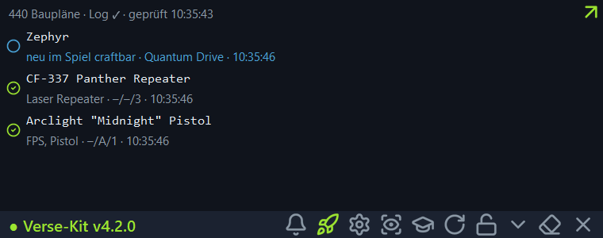
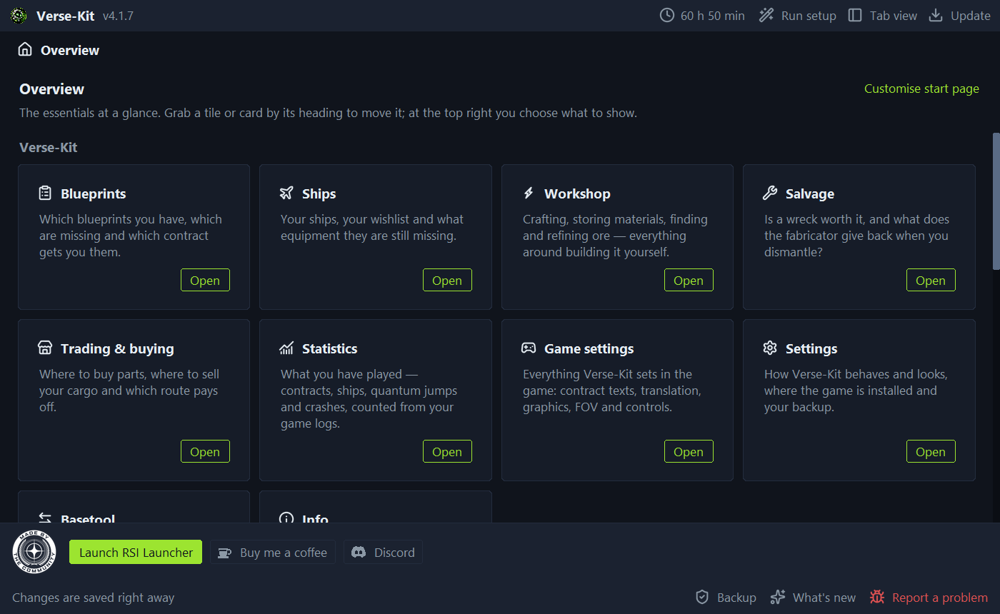
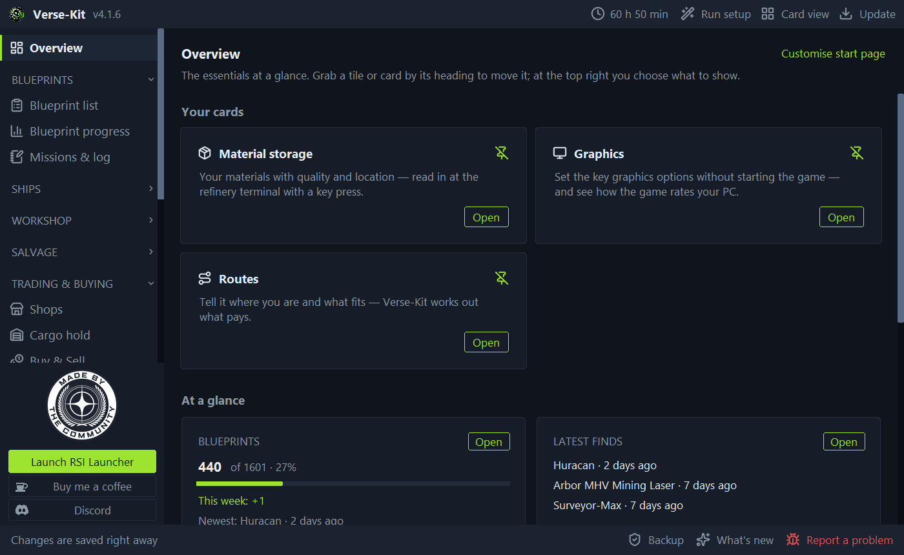

- VerseKit
- Tour
Tour: look at VerseKit before you download it
On the left is the sidebar as it is in the program: same groups, same order. The pictures show the tool with example data.

These are screenshots, not a running program. Clicking inside the picture does nothing; the real tool runs on your computer, not in the browser.
Cards or tabs, whichever you prefer
VerseKit starts in card view: every area as a card with a short explanation, the pages you use all the time pinned to the start page. Prefer everything in one bar on the left? Switch to tab view at the top right. The pages are the same.

